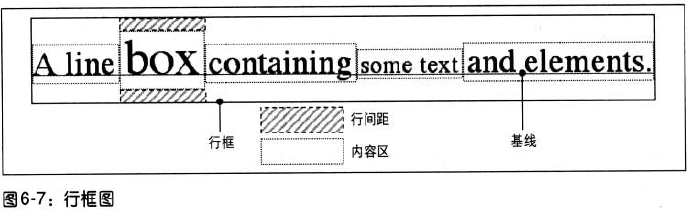

line-height属性指定的是文本行基线之间的距离，而不是字体的大小，它确定了将各个元素的高度增加或减少多少。
line-height的值包括<length>,<percentage>,<number>,normal,并且具有继承性。
文本行中的每个元素都会生成一个内容区，这由字体的大小确认。这个内容区则会生成一个行内框。line-height产生的行间距就是增加或减少各行内高度的因素之一。
确定行间距：将line-height的计算值减去font-size的计算值，这个值是总的行间距，然后将其除以2后，分别应用到内容区的顶部和底部。其结果就是元素的行内框。
当给定的内容已经生产了所有行内框，接下来再将最高行内框的顶端和最低行内框的底端加起来，就构成了该文本行的行框。

line-height的默认值为normal，通常是字体大小的1.2倍。
当一个块级元素从另一个元素继承line-height时，要从父元素进行计算。
例如：父元素指定的行高是10px，而子元素指定的字体大小为15px，就有可能造成子元素上下行重叠。
对于这个问题我们可以使用缩放因子来解决。例如：line-height:1.5;